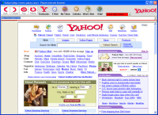

This is a testing-program, implementing the idea of having a
dynamic browser/file manager-interface, build from downloadable xml-files and images. It supports a browserview, menus, favorites, local folders, a flexible browser interface, tabs, listview, combobox, printing, etc. I experimented with browsing using a tabbed-interface. It's not usable as a daily browser, but it can be used to test new browser and file manager interfaces. It is not finished, but it works quite well.
If you want to play with the interface, check out the data
directory: data/.
These files are used to build all interfaces for the browser. They are downloaded on the fly. If you
want to change things, get the files from the data-directory (here
is a zip-file with all of them) and put them
in a folder you like. Then create a shortcut like this:
"C:\Program Files\Provider
Browser\ProviderBrowser.exe" c:/yourfolder/myowninterface.xda
to use your own interface directly. Note: the program can crash when
using your own interface.
You
can go even further by putting all files
from the data
directory (from this
zip-file) in your own
(http://) directory. Then right-click on the ProviderBrowser tray-icon
and click the options. In the options, select the third radio-button,
and change the text-box labelled 'Beginadres' (this is Dutch for
starting-address) to the (http://) directory you created. The
providerbrowser will get the index.xdi file and use it to build the
interface at startup.
Provider
Browser Setup-file
To get it to work: just install this setup program. In the Start-menu, you will find an entry containing the
various interfaces. In Windows 7/Vista you may need to set compatibility mode to Windows 2000 or XP.
Viewers
With the Viewers package, files are viewable in the file
manager-part.
Before installing the viewers, put this vcl50.zip in your Windows/System32 or Windows/System
directory: vcl50
{kind=link}